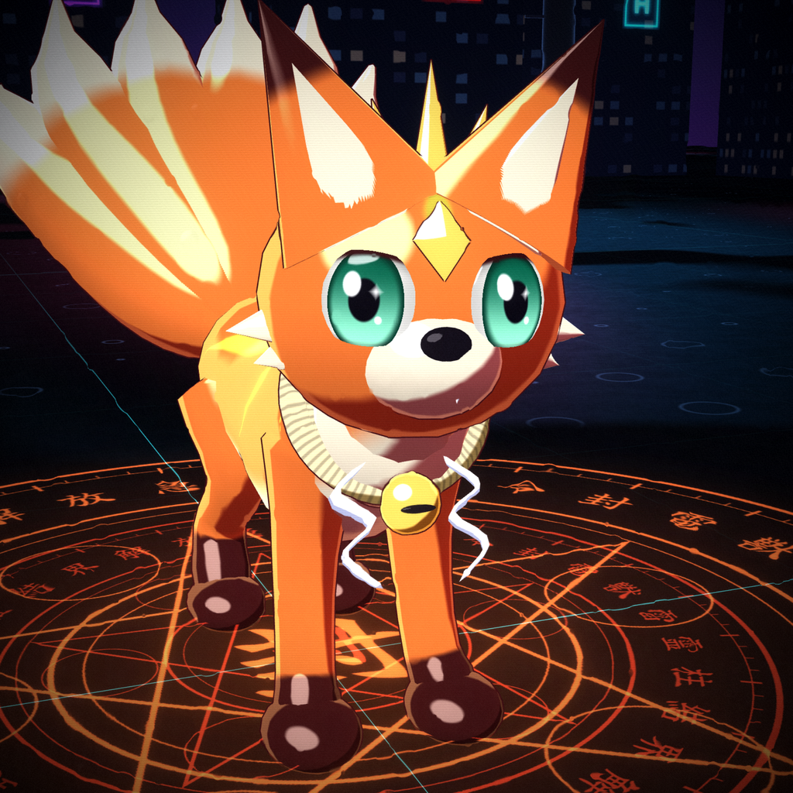
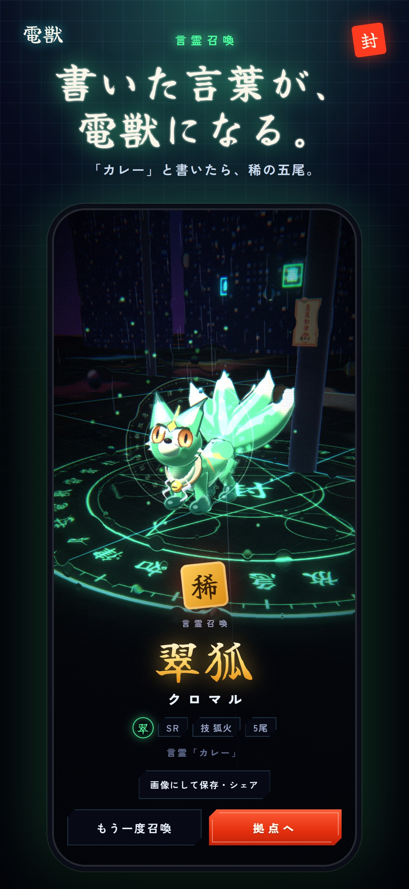
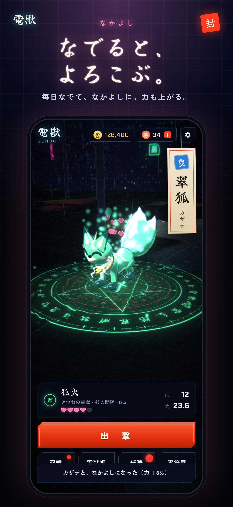
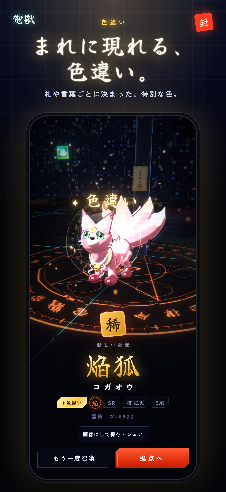
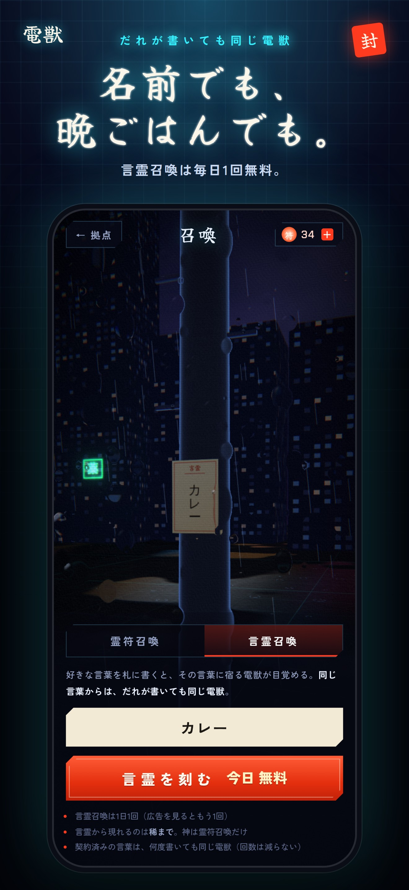
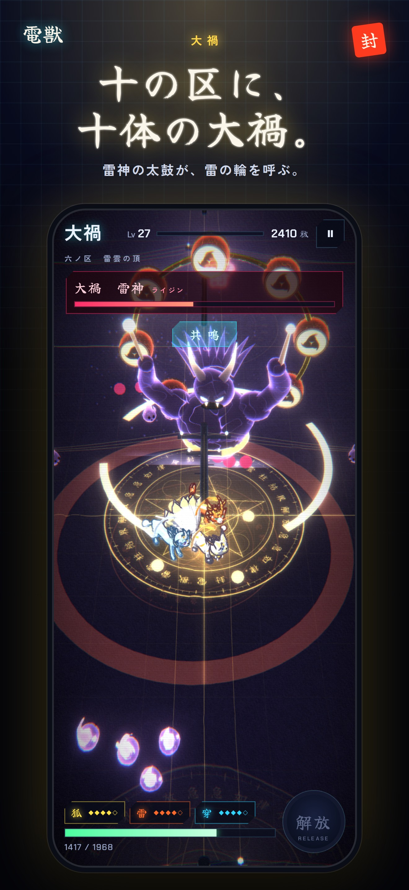

書いた言葉が、
電獣になる。
電線に眠る霊獣「電獣」を喚び、夜の街にあふれる怪異「ノイズ」を祓う、和風3Dサバイバーアクション。好きな言葉を札に書くと、その言葉に宿る電獣が目覚める――だれが書いても、同じ電獣。
App Store 配信準備中







言霊召喚
自分の名前、推しの名前、今日の晩ごはん。言葉ごとに決まった電獣が現れます。「○○って書いたら稀の五尾が出た」をシェアしよう。
遊び方
今日の言霊毎日ひとつ、みんなに同じ言葉が出る。今日の言葉からは、どんな電獣が目覚める？
由来と待ち受け電獣それぞれに、生まれと性格を語る「由来」がある。お気に入りは待ち受け画像にもできる。
指一本ドラッグで移動、技は自動。1回3分前後。区ごとに弱点の属性がある。
覚醒強化を選んで技を進化させ、画面を雷で埋めつくす。
なかよしと昇格拠点で電獣をタップすると、なでられる。毎日なでると「なかよし」が上がり、Lv30・♥5で昇格。子どもの姿から凛々しい姿へ育つ。名前もつけられる。
色違い札や言葉ごとに決まった、まれな色の電獣。黒漆、桜、金、藤、月白。
25種×4階級狐・狼・麒麟・龍・鳳 × 5属性。雷は白磁、焔は朱漆、蒼は氷、翠は翡翠、冥は墨。神の狐は九尾に。
百鬼夜行ノイズは人魂・鎌鼬・鬼・提灯お化け・鎧武者の姿で押し寄せる。妖は形で見分けられる。
6つの区と大禍駅前から千本鳥居の稲荷坂、嵐の鉄塔の丘、雷雲の頂へ。姿も攻撃もちがう大禍が待つ。
深度30浄化した区は、深度を上げてさらに強いノイズへ。